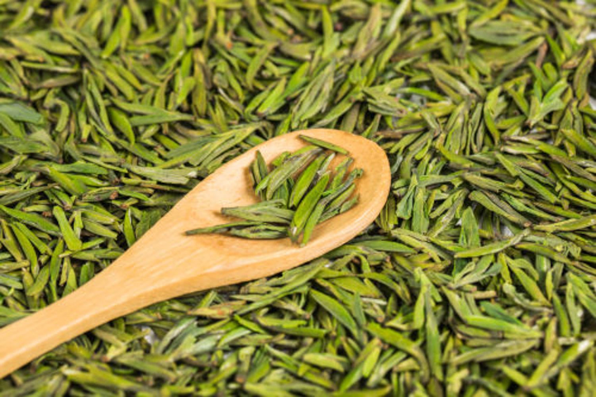
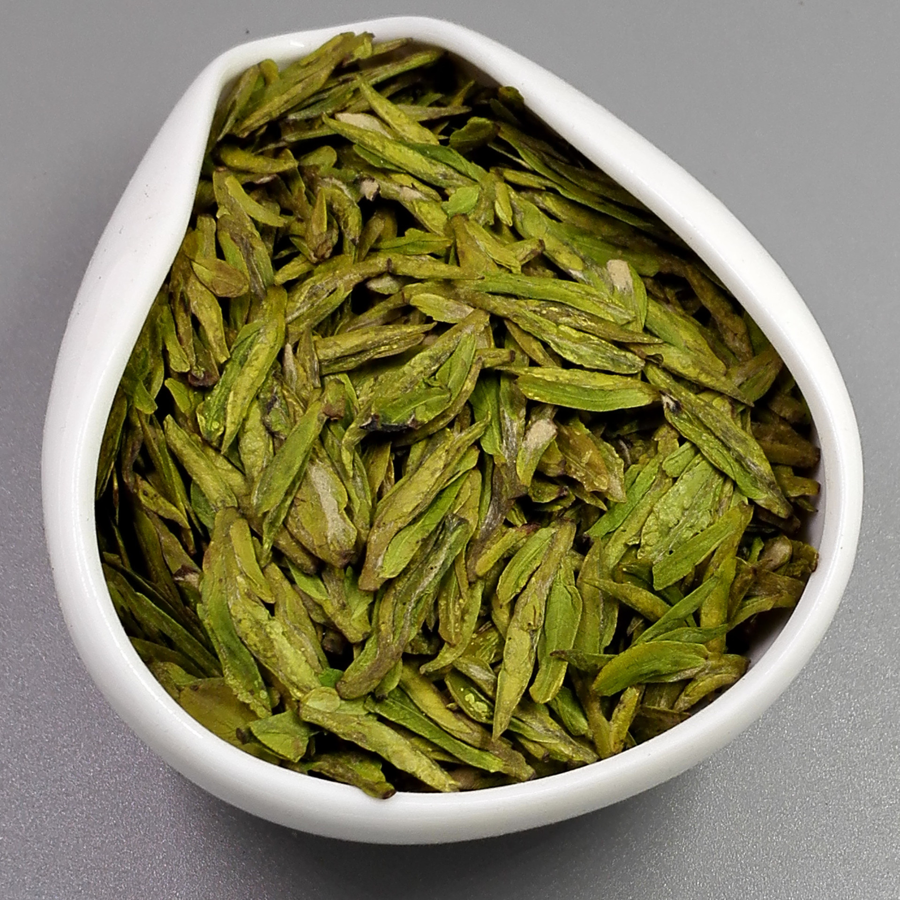
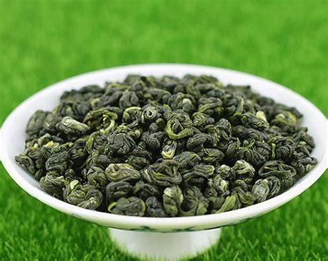
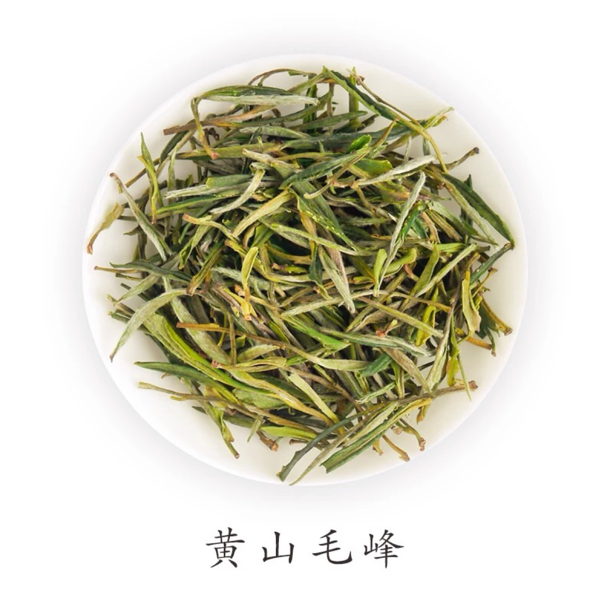

绿茶
清汤绿叶，清香鲜爽 - 中国产量最大的茶类

绿茶概述
绿茶是中国的主要茶类之一，是指采取茶树的新叶或芽，未经发酵，经杀青、整形、烘干等工艺而制作的饮品。其制成品的色泽和冲泡后的茶汤较多的保存了鲜茶叶的绿色格调。
主要特点
- 制作工艺：杀青、揉捻、干燥
- 发酵程度：0%（不发酵）
- 茶汤颜色：清绿明亮
- 香气特点：清香、鲜爽
- 滋味特点：鲜醇甘爽
- 代表茶品：龙井、碧螺春、毛峰
著名绿茶品种

西湖龙井
产于浙江杭州，以色翠、香郁、味醇、形美四绝著称。

洞庭碧螺春
产于江苏苏州，卷曲如螺，银绿隐翠，花果香浓郁。

黄山毛峰
产于安徽黄山，形似雀舌，匀齐壮实，香气清高。
绿茶冲泡指南
1
选具
推荐使用玻璃杯或白瓷盖碗，便于观赏茶叶舒展。
2
水温
80-85℃为宜，避免高温破坏茶叶中的维生素C。
3
投茶
茶水比例1:50，即3克茶叶用150ml水。
4
冲泡
先注入少量水润茶，再高冲注水至七分满。